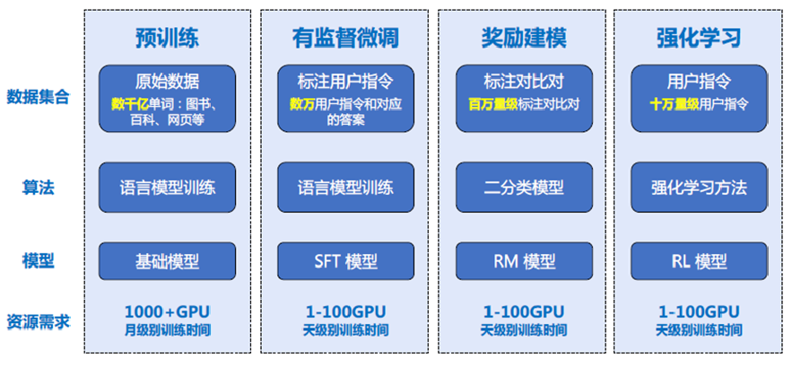
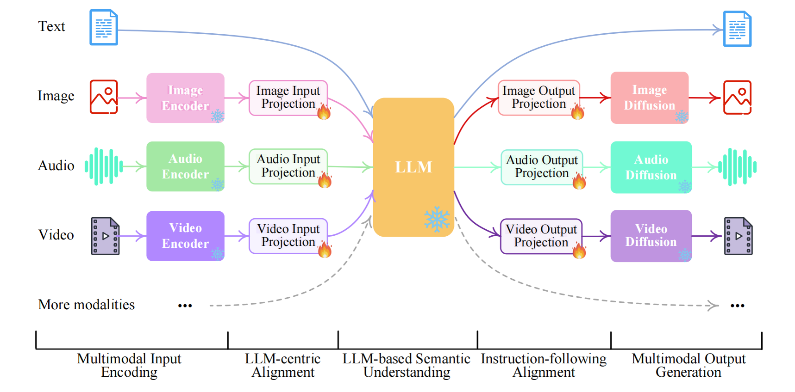

大语言模型深度解析
本文章为Gemini 2.5 Pro生成，文章内容基本来自论文，比较权威。
其中，2，3，4点内容是比较基础的技术概括，5，6，7，8点内容是作者根据当前AI热门发展内容的总结，感兴趣的读者可以跳转至相应的内容。
文章更新于：2025.5.22
📖 目录
- 1. 引言
- 2. Transformer
- 3. LLMs训练流程
- 4. LLMs核心技术
- 5. 多模态
- 6. AI Agents
- 7. 大模型当前的局限性
- 8. 大模型未来的展望
- 9. 结论
- 10. 参考文献与进阶阅读
1. 引言
自2022年末以来，以ChatGPT为代表的大语言模型（Large Language Models, LLMs）引发了全球范围内的科技浪潮，标志着人工智能（Artificial Intelligence, AI）进入了一个新的发展阶段。相较于此前专注于特定任务（如图像识别、棋类博弈）的AI系统，大语言模型展现出在自然语言理解、生成、以及多种复杂认知任务上的通用能力，迅速成为AI研究与应用的核心。本文旨在为对大模型已有初步了解但希望构建更清晰、系统性认知的读者，提供一份深度解析，涵盖其核心原理、关键技术、应用现状及未来趋势。
2. Transformer
Transformer 是一种深度学习模型架构，最初由Google的研究团队在2017年的论文《Attention Is All You Need》中提出。它彻底改变了自然语言处理（NLP）领域，展现出相较于传统循环神经网络（RNN）和长短期记忆网络（LSTM）的显著优势，并成为许多现代AI模型（如GPT、BERT等）的核心基础。
Transformer的核心创新在于其自注意力机制（Self-Attention Mechanism）。该机制允许模型在处理序列中的任一元素（词元）时，能够并行地计算该元素与序列中所有其他元素之间的关联程度（即“注意力权重”），并据此生成该元素的上下文感知表征。这种并行处理特性极大地提高了训练效率，并能有效捕捉文本中的长距离依赖关系，克服了RNN难以并行化和长程依赖捕捉不足的瓶颈。
其数学表达的核心思想可以简化为：对于一个查询Q（Query）、一组键K（Key）和一组值V（Value），注意力输出计算如下： $$ \text{Attention}(Q,K,V) = \text{softmax}\left(\frac{QK^T}{\sqrt{d_k}}\right)V $$
其中，dk是键向量的维度，用于缩放点积结果，防止梯度过小。Transformer进一步引入了多头注意力（Multi-Head Attention），允许模型在不同的表示子空间中并行地学习不同方面的注意力信息，然后将这些信息拼接并线性变换得到最终输出，从而增强了模型的表达能力。

由于自注意力机制本身不处理序列顺序，Transformer引入了位置编码（Positional Encoding），将词元在序列中的位置信息以向量形式注入到输入嵌入中，使模型能够感知词序。
Transformer架构凭借其卓越的性能和可扩展性，迅速成为自然语言处理领域的主流模型架构，为后续BERT、GPT系列等众多影响力深远的大语言模型奠定了基础。
3. LLMs训练流程
大语言模型的强大能力源自于其精心设计的训练流程，该流程通常包含预训练、监督微调和基于人类反馈的强化学习三个主要阶段。
3.1 预训练（Pre-training）
预训练是大模型构建中最为关键且资源消耗最大的环节。在这一阶段，模型在海量的、多样化的未标注文本及代码数据上进行学习。预训练的目标是让模型掌握语言的统计规律、语法结构、语义知识以及广泛的世界常识。
主要的预训练任务包括：
- 掩码语言建模（Masked Language Modeling, MLM）：如BERT采用的策略，随机遮蔽输入文本中的部分词元，训练模型根据上下文预测被遮蔽的词元。
- 因果语言建模（Causal Language Modeling, CLM） 或 下一词元预测（Next Token Prediction）：如GPT系列采用的策略，模型根据给定的上文预测序列中的下一个词元。这种方式使模型天然具备文本生成能力。
通过这些自监督学习任务，模型从大规模数据中自主学习语言的深层表示，形成一个通用的基础模型（Foundation Model）。
3.2 监督微调（SFT）
预训练后的基础模型虽然具备广泛的语言知识，但其行为模式可能与人类的期望或特定任务的需求不完全一致。监督微调旨在通过有监督学习的方式，使模型适应特定的指令遵循模式或下游任务。
SFT阶段使用一个规模相对较小但质量较高的标注数据集。该数据集由成对的“指令-期望输出”（Prompt-Completion）样本构成，这些样本通常由人工编写或经过严格筛选。模型在这些高质量样本上进行微调，学习如何根据指令生成有用、准确且无害的回答。
3.3 强化学习（RLHF）
为进一步提升模型的输出质量，使其更好地对齐人类的复杂偏好和价值观，并减少生成有害或失实内容的倾向，RLHF被广泛应用。该过程主要包括：
- 奖励模型训练（Reward Model Training）：
- 收集数据：针对同一指令，让SFT模型生成多个候选回答。
- 人工排序/评分：由人类评估者对这些候选回答进行排序或给出偏好评分。
- 模型训练：利用这些人工反馈数据，训练一个奖励模型（RM）。该模型能够接收一个“指令-回答”对，并输出一个标量分数，量化该回答符合人类偏好的程度。
- 强化学习优化（Reinforcement Learning Optimization）：
- 策略定义：将SFT模型或经过初步RLHF优化的模型作为强化学习中的策略网络。
- 交互与反馈：策略网络根据输入指令生成回答，奖励模型对该回答进行评分，此评分作为强化学习的奖励信号。
- 策略更新：使用强化学习算法（如Proximal Policy Optimization, PPO）更新策略网络（即语言模型）的参数，目标是最大化累积期望奖励，从而引导模型生成更受人类偏好的内容。

RLHF的引入，显著提升了如ChatGPT等模型在对话连贯性、指令遵循能力和安全性方面的表现。
4. LLMs核心技术
理解大模型的工作机制，需要掌握一些核心的技术概念：
4.1 词元（Tokens）
文本在输入模型前，需通过词元化器（Tokenizer）将其分割为模型可处理的基本单元——词元（Token）。词元可以是单词、子词（如BPE、WordPiece或SentencePiece算法生成的单元）或字符。子词词元化策略能够在控制词表规模的同时，有效处理未登录词（OOV）并保留一定的形态学信息。
4.2 嵌入表示
词元随后被映射为高维稠密的实数向量，即词元嵌入（Token Embeddings）。这些嵌入向量旨在捕捉词元的语义信息，使得语义相近的词元在向量空间中也更为接近。Transformer模型中，除了词元嵌入，还包括位置嵌入（Positional Embeddings）以表征词元在序列中的位置，以及可能的段落嵌入（Segment Embeddings）等。
4.3 上下文窗口
上下文窗口定义了模型在进行预测或生成时能够参考的先前词元的最大数量。例如，4K（4096个词元）的上下文窗口意味着模型在生成当前词元时，最多能利用其前4095个词元的信息。更长的上下文窗口通常能带来更好的长文本理解和生成能力，但也对计算资源和模型设计（如注意力机制的效率）提出更高要求。FlashAttention等技术致力于在扩展上下文长度的同时优化计算效率。
4.4 推理采样策略
在文本生成阶段，为了控制输出的多样性和确定性，常采用以下参数和策略：
- 温度（Temperature）：调节输出随机性的参数。较低温度使模型倾向于选择概率最高的词元，生成更确定、保守的内容；较高温度则增加选择低概率词元的可能性，生成更多样、创新的内容，但可能牺牲一定的连贯性。
- Top-k采样：在每一步生成时，仅从概率最高的k个候选词元中进行采样。
- Top-p（Nucleus）采样：选择一个累积概率阈值p，仅从概率之和刚好超过p的最小词元集合中进行采样。这种方法比Top-k更具适应性。
合理的采样策略组合对于生成高质量且符合需求的文本至关重要。
4.5 提示工程（Prompts）
提示（Prompt）是用户与大模型交互的接口，其设计质量直接影响模型的输出效果。提示工程是指设计和优化提示以引导模型高效、准确地完成任务的艺术和科学。有效的提示应具备清晰性、明确性，并可包含任务描述、角色设定、上下文信息、少量示例（Few-shot Prompting）乃至思维链引导（Chain-of-Thought Prompting），后者通过引导模型输出中间推理步骤来提升复杂问题的解决能力。
5. 多模态
在最开始，ChatGPT 3.5就是一个聊天页面，用户输入文字，大模型返回文字；如果强制在提示词中要求大模型生成文件或媒体等内容，大模型会表示做不到。早期大模型主要聚焦于文本处理，但是到了现在，多模态大模型（Multimodal Large Models）已成为当前重要的发展方向，例如ChatGPT 4o，这类模型能够处理和生成如文本、图像、音频和视频这种类型的数据。
关键技术包括：
- 跨模态嵌入空间学习：将不同模态的信息映射到统一的语义表示空间，如CLIP模型通过对比学习对齐图像和文本的嵌入。
- 多模态融合机制：设计有效的模块来融合来自不同模态的信息，如交叉注意力机制。

除了大模型具有多模态的能力之外，许多厂商将文生图、文生视频的能力单独拎出来，形成独立的应用，本质还是用户输入Prompt，大模型再对生对应的内容，代表性应用有：
- 文本到图像生成：如DALL-E、Stable Diffusion、Imagen
- 文本到视频生成：如fish audio、Azure TTS
- 文本到视频生成：如Sora、Veo
多模态能力的整合使得大模型能更全面地感知和交互，多模态能力是通往AGI（通用型人工智能）的必进之路，在《钢铁侠》中的“贾维斯”就是类似AGI的形态，如果他只能看懂文字和处理文字，那不完犊子了嘛。
6. AI Agents
大语言模型凭借其强大的通用性和适应性，已在众多领域展现出巨大的应用潜力：
- 信息获取与整合：智能搜索、文档摘要、知识问答。
- 内容创作：辅助写作（邮件、报告、代码、营销文案、创意文本）。
- 人机交互：智能客服、虚拟助手、情感陪伴。
- 教育科研：个性化辅导、研究助理、数据分析。
- 软件开发：代码生成、解释、调试和自动化测试（如GitHub Copilot）。
- 专业服务：医疗领域的辅助诊断、病历分析；金融领域的市场分析、风险评估；法律领域的文书起草、案例检索。
- AI智能体（AI Agents）：赋予模型自主规划、决策和执行复杂任务的能力，通过调用工具（APIs、代码解释器等）与外部环境交互，实现如自动化数据分析、任务管理等。
这些应用正在重塑各行各业的工作模式，并催生新的商业机会。
7. 大模型当前的局限性
尽管大模型取得了显著进展，但其发展与应用仍面临诸多挑战：
- “幻觉”与事实一致性：模型可能生成看似合理但与事实不符或无意义的内容。确保输出的真实性和可靠性是核心挑战。
- 数据偏见与公平性：训练数据中存在的偏见可能被模型学习并放大，导致不公平或歧视性的输出。
- 可解释性与透明度：大模型决策过程的“黑箱”特性使得理解其行为和诊断错误变得困难。
- 计算资源消耗与环境影响：训练和部署大规模模型需要巨大的计算能力和能源消耗。
- 数据安全与隐私保护：处理敏感数据时，存在泄露和滥用风险。
- 知识更新与时效性：预训练模型知识截止于训练数据，对新近信息的处理能力有限，需要通过检索增强生成（RAG）等技术弥补。
- 滥用风险：如生成虚假信息、恶意代码、进行网络攻击等。
应对这些挑战需要技术创新、行业自律以及健全的伦理规范和法律监管框架。
8. 大模型未来的展望
大语言模型领域的研究日新月异，未来发展趋势可能包括：
- 模型架构创新：探索超越Transformer的新型高效架构，如状态空间模型（SSMs）的变体（Mamba）。
- 上下文长度的持续扩展：支持更长文档的理解和更连贯的多轮交互。
- 推理能力的增强：提升模型在逻辑、数学、规划等复杂认知任务上的表现，可能结合符号推理方法。
- 模型效率提升：通过模型压缩、量化、知识蒸馏、稀疏化（如混合专家模型MoE）等技术，降低部署和运行成本。
- 世界模型与具身智能：构建能理解和预测物理世界动态的模型，并与机器人等实体结合，实现与物理世界的交互。
- 自主学习与持续适应：发展能够从持续交互和新数据中高效学习并适应环境变化的能力。
- AI对齐（Alignment）研究的深化：确保模型的目标和行为与人类的价值观和意图高度一致，是实现安全可控AI的关键。
- 向通用人工智能（AGI）的探索：大模型被认为是通往AGI的重要路径之一，未来将持续探索其认知能力的边界。
- [图片描述]：此处可插入一张示意图，描绘大模型未来发展的几个关键方向，如更强的推理能力、多模态深度融合、高效模型、AI安全与对齐等。
9. 结论
大语言模型作为人工智能领域的一项变革性技术，正在深刻影响科学研究、产业发展和社会生活的方方面面。它们在自然语言处理及相关认知任务上展现的卓越能力，为解决复杂问题和提升生产力开辟了新的途径。然而，伴随其强大能力而来的挑战亦不容忽视。未来，通过持续的技术攻坚、跨学科协作以及负责任的伦理引导，大语言模型有望在推动社会进步和增进人类福祉方面发挥更加积极和深远的作用。对于希望深入理解并应用这一技术的个体而言，持续学习和批判性思考将是驾驭这场技术变革的关键。
10. 参考文献与进阶阅读
- Vaswani, A., Shazeer, N., Parmar, N., Uszkoreit, J., Jones, L., Gomez, A. N., ... & Polosukhin, I. (2017). Attention is all you need. Advances in neural information processing systems, 30.
- Devlin, J., Chang, M. W., Lee, K., & Toutanova, K. (2018). Bert: Pre-training of deep bidirectional transformers for language understanding. arXiv preprint arXiv:1810.04805.
- Radford, A., Wu, J., Child, R., Luan, D., Amodei, D., & Sutskever, I. (2019). Language models are unsupervised multitask learners. OpenAI blog, 1(8), 9. (GPT-2)
- Brown, T., Mann, B., Ryder, N., Subbiah, M., Kaplan, J. D., Dhariwal, P., ... & Amodei, D. (2020). Language models are few-shot learners. Advances in neural information processing systems, 33, 1877-1901. (GPT-3)
- Ouyang, L., Wu, J., Jiang, X., Almeida, D., Wainwright, C., Mishkin, P., ... & Lowe, R. (2022). Training language models to follow instructions with human feedback. Advances in Neural Information Processing Systems, 35, 27730-27744. (InstructGPT/RLHF)
- OpenAI. (2023). GPT-4 Technical Report. arXiv preprint arXiv:2303.08774.
- Touvron, H., Martin, L., Stone, K., Albert, P., Almahairi, A., Babaei, Y., ... & Lample, G. (2023). Llama 2: Open foundation and fine-tuned chat models. arXiv preprint arXiv:2307.09288.
- Wei, J., Wang, X., Schuurmans, D., Bosma,M., Xia, F., Chi, E., ... & Zhou, D. (2022). Chain-of-thought prompting elicits reasoning in large language models. Advances in Neural Information Processing Systems, 35, 24824-24837.
- Radford, A., Kim, J. W., Hallacy, C., Ramesh, A., Goh, G., Agarwal, S., ... & Sutskever, I. (2021). Learning transferable visual models from natural language supervision. International conference on machine learning (pp. 8748-8763). PMLR. (CLIP)
- Bommasani, R., Hudson, D. A., Adeli, E., Altman, R., Arora, S., von Arx, S., ... & Liang, P. (2021). On the opportunities and risks of foundation models. arXiv preprint arXiv:2108.07258.
- Zhao, W. X., Zhou, K., Li, J., Tang, T., Wang, X., Hou, Y., ... & Wen, J. R. (2023). A survey of large language models. arXiv preprint arXiv:2303.18223. (一篇全面的综述性论文)
推荐学习资源：
- Stanford CS224N: NLP with Deep Learning: https://web.stanford.edu/class/cs224n/
- Hugging Face Courses: https://huggingface.co/learn
- AI Papers with Code: https://paperswithcode.com/area/natural-language-processing